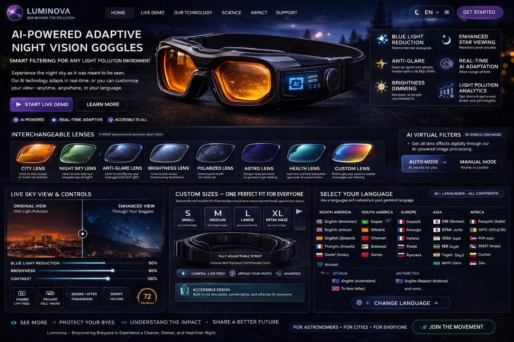

See the Universe Beyond the Light
Staarlina blends cutting-edge AI with interchangeable optical lenses to pierce through light pollution — restoring the night sky for astronomers, families, and curious minds everywhere.
Sky Lab AI
Simulate the night sky through each AI lens — or use your own camera to filter live images.
Active Lens
Your Snapshots
AI-Powered Lenses
Five intelligent filters engineered to transform how you experience the night sky.
City Lens
Engineered for urban environments. Selectively attenuates LED blue-light frequencies (450–490nm) responsible for the worst light pollution in cities, replacing harsh cold tones with warmer amber hues. Ideal for city-dwellers and suburban observers.
Astronomy Lens
Maximises contrast ratio for deep-sky observation. Sharpens the luminance differential between celestial bodies and the surrounding sky, making faint nebulae, star clusters, and galaxies dramatically more visible.
Anti-Glare Lens
Neutralises point sources of artificial light — street lamps, billboards, illuminated windows — without darkening the entire visual field. Preserves the natural sky background while eliminating distracting halos.
Brightness Lens
Adapts to excessively bright environments by dynamically attenuating overall luminance while preserving colour accuracy. Useful in transition hours (dusk/dawn) or in areas with overwhelming sky-glow.
Custom Lens
Build your own personalised filter profile. Dial in precise blue-light attenuation, contrast enhancement, and warm-tint intensity. Save multiple profiles for different observation sites and share with the research community.
Lens Comparison Matrix
| Feature | 🏙 City | 🔭 Astronomy | 🛡 Anti-Glare | ☀ Brightness | ⚙ Custom |
|---|---|---|---|---|---|
| Blue Light Reduction | ●●● | ●●○ | ●●○ | ●○○ | ●●● |
| Star Contrast | ●○○ | ●●● | ●●○ | ●○○ | ●●● |
| Glare Suppression | ●●○ | ●○○ | ●●● | ●●○ | ●●● |
| Warm Tinting | ●●● | ●○○ | ●○○ | ●○○ | ●●● |
| Best For | Cities | Rural/Dark Sites | Suburbs | Bright Areas | Everywhere |
Light Pollution Map
Explore real-time light pollution levels worldwide. Find the darkest skies near you.
Learn About Light Pollution
A knowledge hub for astronomers, students, families, and curious minds.
Research Hub
Submit your own observations. Contribute to global light pollution science.
Submit Your Observation
Drop image here or click to upload
Community Observations
Luminova
AI-Powered Smart Goggles for the Night Sky

✦ Click the glowing points to explore features
Explore Luminova
Click any glowing hotspot on the goggles image to discover the technology built inside.
5 AI-Powered Lens Profiles
Switch between profiles with a single button press. Each lens is purpose-built for a different environment.
City Lens
Engineered for urban environments. Selectively attenuates LED blue-light frequencies (450–490nm) — the primary contributor to city sky glow — replacing harsh cold tones with warm amber hues.
Technical Specifications
What Astronomers Say
"Extraordinary. For the first time in 20 years of city-based astronomy, I could pick out M42 from my rooftop."
"My students are more engaged with light pollution science than ever before. The City Lens completely changed our field trips."
"The custom lens builder lets me fine-tune for every site I visit. It's become an essential part of my kit."